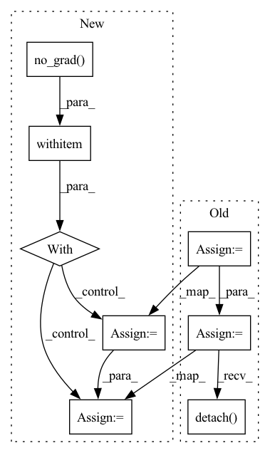

Pattern ID :26019

Before Change
itemgetter("action_scaled", "log_prob")(self.policy_network.sample(next_obs_batch))
next_state_q1_value = self.target_q1_network(torch.cat([next_obs_batch, next_state_action], dim=1))
next_state_q2_value = self.target_q2_network(torch.cat([next_obs_batch, next_state_action], dim=1))
next_state_min_q = torch.min(next_state_q1_value, next_state_q2_value)
target_q = (next_state_min_q - self.alpha * next_state_log_pi)
target_q = reward_batch + self.gamma * (1. - done_batch) * target_q
//compute q loss and backward
q1_loss = F.mse_loss(curr_state_q1_value, target_q.detach())
q2_loss = F.mse_loss(curr_state_q2_value, target_q.detach())
q1_loss_value = q1_loss.detach().cpu().numpy()
After Change
reward_batch = reward_batch * self.reward_scale
curr_state_q1_value = self.q1_network(torch.cat([obs_batch, action_batch],dim=1))
curr_state_q2_value = self.q2_network(torch.cat([obs_batch, action_batch],dim=1))
with torch.no_grad():
next_state_action, next_state_log_pi = \
itemgetter("action_scaled", "log_prob")(self.policy_network.sample(next_obs_batch))
next_state_q1_value = self.target_q1_network(torch.cat([next_obs_batch, next_state_action], dim=1))
next_state_q2_value = self.target_q2_network(torch.cat([next_obs_batch, next_state_action], dim=1))
next_state_min_q = torch.min(next_state_q1_value, next_state_q2_value)
target_q = (next_state_min_q - self.alpha * next_state_log_pi)
target_q = reward_batch + self.gamma * (1. - done_batch) * target_q
In pattern: SUPERPATTERN
Frequency: 3
Non-data size: 8
Instances
Fragment ID: 78519023
Project Name: x35f/unstable_baselines
Commit Name: fd650918d0f96ab53625afed362025e5a53c10a6
Time: 2022-06-13
Author: 1621322691@qq.com
File Name: unstable_baselines/baselines/sac/agent.py
M Class Name: SACAgent
N Class Name: SACAgent
M Method Name: update(2)
N Method Name: update(2)
M Parent Class: BaseAgent,torch.nn.Module
N Parent Class: BaseAgent,torch.nn.Module
M File Name: unstable_baselines/baselines/sac/agent.py
N File Name: unstable_baselines/baselines/sac/agent.py
M Start Line: 78
M End Line: 139
N Start Line: 78
N End Line: 131
'>
Before Change
// Compute the target Q value
target_q1, target_q2 = self.critic_target(next_obs, next_action)
target_q = th.min(target_q1, target_q2)
target_q = reward + ((1 - done) * self.gamma * target_q).detach()
// td error + entropy term
q_backup = (target_q - self.ent_coef * next_log_prob.reshape(-1, 1)).detach()
// Get current Q estimates
// using action from the replay buffer
current_q1, current_q2 = self.critic(obs, action_batch)
After Change
// Select action according to policy
next_action, next_log_prob = self.actor.action_log_prob(next_obs)
with th.no_grad():
// Compute the target Q value
target_q1, target_q2 = self.critic_target(next_obs, next_action)
target_q = th.min(target_q1, target_q2)
target_q = reward + (1 - done) * self.gamma * target_q
// td error + entropy term
q_backup = target_q - ent_coef * next_log_prob.reshape(-1, 1)
'>
Fragment ID: 78519071
Project Name: dlr-rm/stable-baselines3
Commit Name: 0e4fc9c0acd7817c47041a0e5e3fa74936e0e69b
Time: 2019-09-25
Author: antonin.raffin@dlr.de
File Name: torchy_baselines/sac/sac.py
M Class Name: SAC
N Class Name: SAC
M Method Name: train(3)
N Method Name: train(3)
M Parent Class: BaseRLModel
N Parent Class: BaseRLModel
M File Name: torchy_baselines/sac/sac.py
N File Name: torchy_baselines/sac/sac.py
M Start Line: 169
M End Line: 207
N Start Line: 163
N End Line: 209
'>
Before Change
self.to(torch.device(device))
def forward(self, text):
phones = self.text2phone.string_to_tensor(text).squeeze(0).long().to(torch.device(self.device))
mel = self.phone2mel(phones).transpose(0, 1).detach()
wave = self.mel2wav(mel.unsqueeze(0)).squeeze(0).squeeze(0).detach()
return wave
def read_to_file(self, text_list, file_location):
After Change
self.to(torch.device(device))
def forward(self, text):
with torch.no_grad():
phones = self.text2phone.string_to_tensor(text).squeeze(0).long().to(torch.device(self.device))
mel = self.phone2mel(phones).transpose(0, 1)
wave = self.mel2wav(mel.unsqueeze(0)).squeeze(0).squeeze(0)
return wave
'>
Fragment ID: 78518979
Project Name: digitalphonetics/ims-toucan
Commit Name: 5838ecc90398ce2a0a681be9b99bf13085fb220e
Time: 2021-03-29
Author: florian.lux@ims.uni-stuttgart.de
File Name: InferenceInterfaces/SingleSpeakerTransformerTTSInference.py
M Class Name: SingleSpeakerTransformerTTSInference
N Class Name: SingleSpeakerTransformerTTSInference
M Method Name: forward(2)
N Method Name: forward(2)
M Parent Class: torch.nn.Module
N Parent Class: torch.nn.Module
M File Name: InferenceInterfaces/SingleSpeakerTransformerTTSInference.py
N File Name: InferenceInterfaces/SingleSpeakerTransformerTTSInference.py
M Start Line: 329
M End Line: 331
N Start Line: 329
N End Line: 333